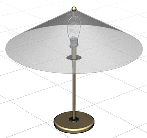
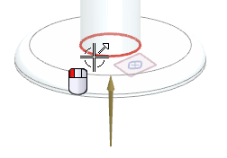
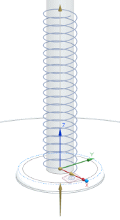
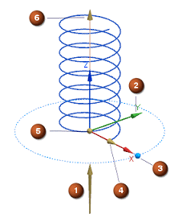

Create an initial helix
-
Open des18_85_helix_lamp_assm.

-
Verify that the Role is Advanced with full menus
 .
.
-
Make des18_lamp_vertical_helix the work part.
-
On the View toolbar, click See-Thru All
") .
.
The square sketch with the rounded edges on the angled datum plane will be used with the helix you develop to create the helical decorative element of the lamp design.

-
Choose Insert→Curve→Helix.
Note
Helix
 is also available on the Curve toolbar.
is also available on the Curve toolbar.
-
Select the edge of the vertical stem to specify the CSYS.

An initial preview helix is displayed using the CSYS and the default settings.

On-screen handles enable you to specify helix parameters dynamically.

-
Vector
-
CSYS
-
Angle handle
-
Diameter/Radius handle
-
Length Start Limit
-
Length End Limit
-